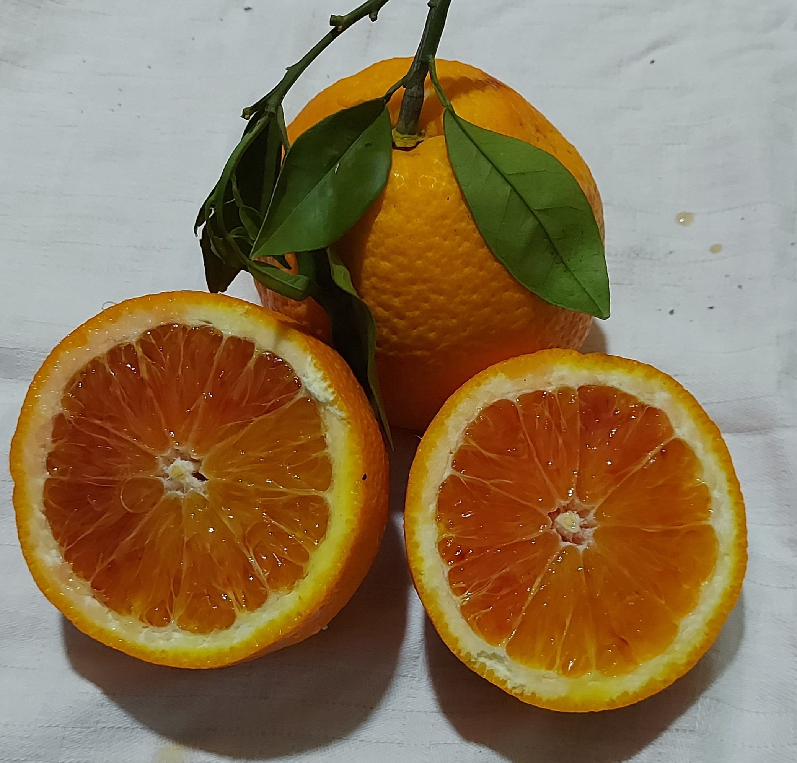
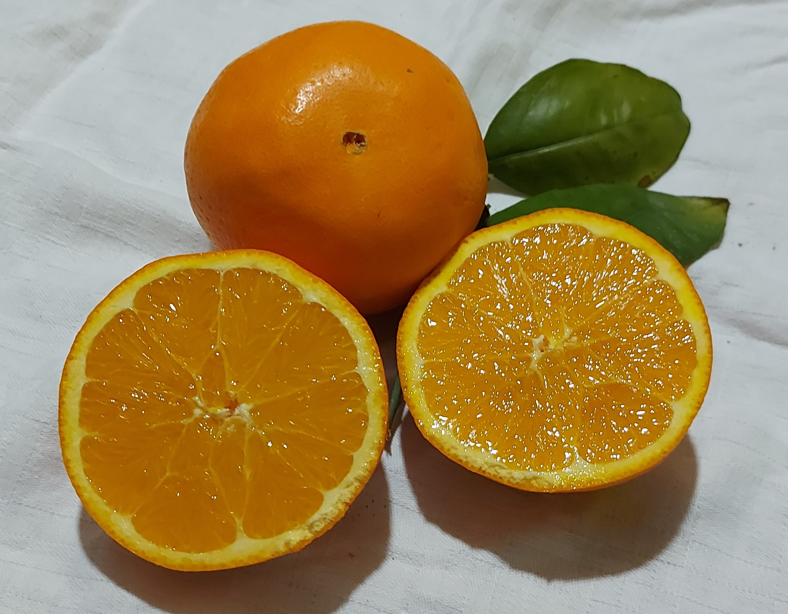
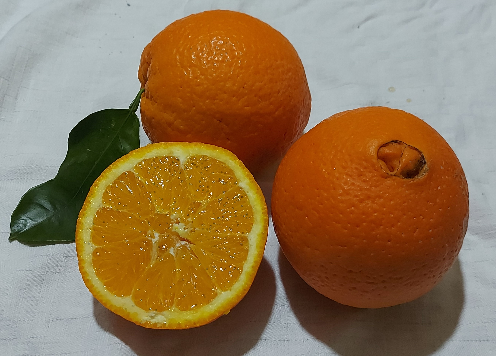

Casaccio Agrippino
Azienda Agricola Gagliano
Casaccio Agrippino
Azienda Agricola Gagliano
1.
TAROCCO
Tarocco Gallo
L'arancia rossa più famosa, caratteristica della Piana di Catania. Ha una forma generalmente ovolidale, con una buccia di medio spessore, peso medio attorno ai 200g e non presenta semi. Si raccoglie nel periodo invernale (Dic-Apr) ed è destinata alla vendita all'ingrosso e alla produzione di spremute dal caratteristico colore rosso. è una varietà relativamente giovane e dal punto di vista nutrizionale è fortemente consigliata nella dieta mediterranea. Supergallo
2.
SANGUINELLO
Tarocco Rosso Sanguinello
È un tipo di arancia rossa caratterizzata dal colore intenso della polpa. La forma è a metà tra la sferica e l'ovoidale e presenta una buccia arancione spessa e pochi (o anche nulli) semi interni. Si raccoglie nel lungo periodo invernale-inizio primaverile (Gen-Apr) ed è di dimensioni medio-piccola. Nutrizionalmente presenta un gusto dolce e una maggior quantità di Vitamina C rispetto alle altre arance rosse. Simbolo di tradizione e qualità
3.
WASHINGTON
Washington Navel
Sono il secondo tipo di arance più coltivate al mondo, anche se in Sicilia sono pochi i posti in cui sono presenti, tra cui Ribera e la mia proprietà. Presentano una forma sferica e un peso medio di 200g. Caratteristica è la presenza di un "ombelico" di dimensioni variabili nella parte inferiore del frutto. La buccia è liscia e di medio spessore fine, un contenuto di succo molto elevato non troppo acido ed un periodo di raccolta invernale (Dic-Mar). Il colore invece è generalmente arancione, con un intensità variabile a seconda del grado di maturazione. Equilibrato
4.
MORO
MORO NL 58-8D-1
Caratteristica della Sicilia Sud-Orientale presenta una polpa molto scura, da qui l'origine del nome. La sua buccia è di medio spessore e assenza di semi. Hanno una forma sferica ed un peso attorno ai 150g. Il suo sapore è intenso ma comunque dolce e molto ricca di acqua, quasi l'85%. Hanno un periodo di raccolta molto piccolo (Gen-Feb). Sono inoltre riconosciute dal Consorzio di Tutela dell’Arancia Rossa di Sicilia IGP. Di fuoco
5.
NOVELLINO
Novellino Navel
Detta anche Navel di Francofonte è una delle cosidette polpe bianche. Il succo che vi si ricava infatti è molto dolce e poco aspro. il frutto presenta una froma ovoidale e la buccia sottile e liscia. è adatta soprattutto per le spremute, grazie all'alto contenuto di succo e vitamina C. Sono tipiche della Piana di Catania e, a differenza di altre varietà, presenta una maturazione relativamente precoce (Nov-Gen). Delicato